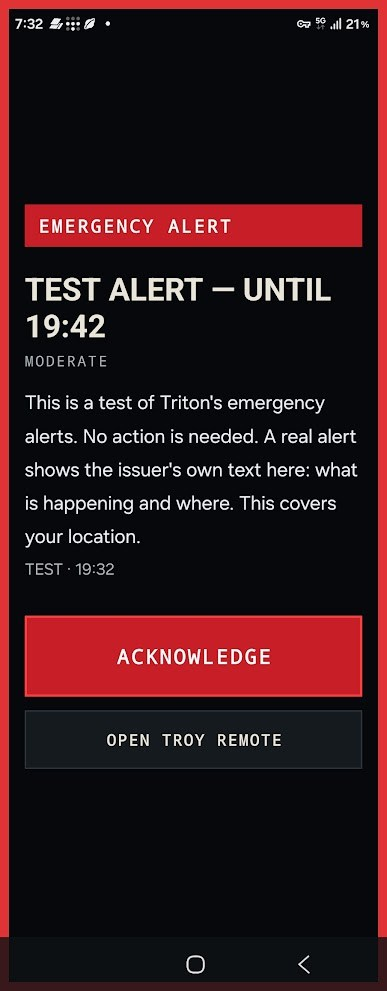

Pre-Release 0.1.
The next Triton release, Prototype 156, after Prototype 155 · Build 8. This is what's coming in it.

Folder Explorer: Space Map side panel
- Right-click ▦ Space Map (in the folder toolbar, and the Space Map buttons on the Core Code page) to open the map in a snap panel beside the window. The tab's own view doesn't change.
- The panel adds an aqua button to the title bar to hide or show it. Both stay until you press the panel's red close button, which also stops the map's scan.
- Right-clicking another folder's Space Map swaps the map in the same panel (one per window).
- Double-click a folder in the side map to open it in the tab. Files open with their system app.
- Left-click on Space Map works as before.

Troy: Dramatic Action
An optional feature for Troy. While Troy performs an action, such as an Atlas query, Dramatic Action shows his process in a terminal as it happens.
Crash guard and phone alerts
- Crash guard: a small watcher process restarts Triton when it ends without a Shutdown, Restart or boot screen close: a crash, End task or kill.
- Recovery limit: it stops restarting after 3 crashes in 15 minutes. Both numbers are settings:
crashguard.maxRecoveries(0 = no limit) andcrashguard.windowMinutes. - Crash notice: after a recovery, Triton shows a “TRITON RECOVERED” notice with three beeps and sends a line to your phone, like a Troy reply. It uses the same
UrgentNoticeplate as emergency alerts. - Your phone rings on a crash: the crash notice makes the phone play the emergency alert sound until you acknowledge it. The PC stays quiet and keeps the notice on screen until then.
- Planned stops: Triton tells linked phones just before a Shutdown, Restart or close, so they don't treat it as a crash.
Emergency alerts
Triton works out where the PC actually is, from its network location rather than the operating system’s region setting, and watches the official alert feeds for that country: WMO, the US National Weather Service, the Thai Meteorological Department, USGS earthquakes and GDACS. Alerts are checked for relevance, then announced with a plate, a sound, a bubble and Troy’s voice.


- The alert plate: a red banner with the alert’s description and an Acknowledge button, on the least busy screen. One plate at a time; the rest wait in line, most serious first.
- Sound by severity: ordinary alerts beep three times and fold away after 45 seconds. Severe ones sound an alarm until acknowledged.
- Presence-aware alarm: if no camera sees anyone for 10 seconds, counted after Troy finishes speaking, the alarm goes quiet. It starts again when someone is seen.
- On every device: every Remote page and the Troy page get a red outline and the same plate. Acknowledging on any device closes it everywhere, the PC included.
- Control Center: a redesigned Notification Announcer page with an Emergency alerts section: on/off, location, alerts in force, banner, sound and speech switches, minimum severity, and Normal and Severe test buttons.
Try the PC alert
This is the plate on the PC. Acknowledging it on any device closes it everywhere. Try the button:
A copy of the PC alert, for this page. Nothing is sent.
This is a test of Triton’s emergency alerts. No action is needed. A real alert shows the issuer’s own text here: what is happening and where. This covers your location.
Troy: Remedy
When you ask Troy how to fix a known problem, he looks it up in Triton’s list of remedies instead of writing a command himself. The command is built from your own install’s paths.
Send the message below to ask Troy.
- Run box: on the Troy page, the remedy’s command shows under his reply in a code box with a Run button. Run asks first (Always allow, Allow once or Decline, remembered per remedy), then shows the result under the box.
- First remedy, crash guard reset: ask “How do I reset crash guard” and Troy offers to clear the crash guard’s history, so it restarts Triton after the next crash again.
Known limits
- Remedies run on the PC only. On a phone, Troy tells you so.
- Troy’s own chat window and voice give the answer without the Run box.
Troy Remote for Android
A native Android app for Troy Remote, now at version 1.0.475387. It shows your PC's Troy Remote pages, so updating Triton updates most of the app.
Getting started
- Pair by scanning the QR code, pasting the link, or opening it from the camera app. The pairing key is never backed up.
- Voice works on your local network with Android's own speech recognition and text to speech. You no longer need
tailscale servefor the mic. - Take a photo or pick one from the gallery. If the PC can't be reached, an offline screen lets you retry. The back gesture works.
- The app icon is the Triton glyph.
Notifications
- Emergency alerts on the alarm channel, with an Acknowledge button that also closes the alert on the PC.
- A full-screen alert over the lock screen, or a normal banner while the phone is unlocked, with its own critical alert sound.
- Troy's replies, Talk Hub items, missed calls and arrivals pop up as banners.
- Talk Hub notifications show the bubble's options as buttons. The buttons go away once the bubble leaves the PC screen.
- “Someone is in view” notifications come with a snapshot. Tap one to open that camera live.
- If you turned notifications off, the app asks again. The background link starts even without that permission.
“PC not responding” alarm
- Rings after 2 minutes without the PC, unless the phone is offline, on another network, or Triton said it was stopping. It loops the emergency sound and vibrates until you tap OK or the PC is back.
- Works while the phone is locked: the app keeps checking the PC with the screen off, and asks once for unrestricted battery so Android doesn't pause it.
- It has its own notification channel, so you can turn it off in Android settings without silencing emergency alerts.
Calls
- An incoming call notification with Answer here, Decline, Let Troy answer, Send to my phone, and Answer on PC.
- Answer on the phone: a call screen with mute, speaker, keypad and hang up, using about 0.5 MB of data a minute, with echo cancelling.
- Answering needs the phone unlocked. If the phone goes quiet, Troy takes the call or it's hung up.
- While a call is on the phone, Troy keeps listening on the PC, and the PC shows “On your phone”.
- Missed-call notifications.
Updates
- The app updates itself: a prompt when it opens, plus an “Update ready” notification.
- Your PC serves the app. Open the Troy Remote home page in Chrome on your phone and press GET to download it.
Troy Remote pages on the PC
- Talk Hub (
/hub): a channel dropdown and an “Allow actions on the PC” tick that starts off and turns itself off after 2 minutes. - Cameras (
/camera): live view, a camera picker and recent arrivals. - Home screen tiles: Talk Hub, Cameras, Camera, Send photos, and a TRITON section for built-in apps: Settings, Control Center, Terminal, Downloads and Module Restorer.
- App tiles: long-press for Close App. A green dot shows when the app is open on the PC.
- Power: a Crash JVM card that stops Triton so crash recovery restarts it. It's refused when recovery isn't watching.
- Phone page: Answer on this phone, Move to phone or PC, and a Forward calls to setting (it needs the country code).
- Photos: Camera and Send photos save to the signed-in user's
Picturesfolder. - Smoother: overlapping frame requests, 16 server threads instead of 4, and faster change detection while you're touching the screen.
- App view: app windows shrink to phone width, and their minimum size comes back afterwards. Forge gets a compact one-pane layout on a phone.
API changes
SnapPanel
- New optional
setCloseDisposes(true): the red close button disposes the panel and removes its aqua button, instead of hiding it. It's off by default, so the Forge, Volume and Meridian panels still just hide. - New
close()method. - Closing a panel now only unregisters that panel, so a newer panel for the same window stays registered.
UrgentNotice
- New
UrgentNotice: one public class any service can use to raise the same interruption as an emergency alert, with its own title, text, optional alarm and speech, an acknowledge callback, and a handle to dismiss it. Crash guard’s notice uses it. UrgentNotice.ringPhones(true): any notice can ring linked phones without sounding the PC alarm.
Remedy registry
- New
triton.troy.remedy: a part of Triton can register a known problem, the words that name it and the remedy command for it. Troy’stroy.remedyskill looks problems up there.
Telephony
- Calls answered on a phone go through the new
PhoneCallAudio.
Fixes
- Twilio call fixes (receiving calls).
- Phones no longer miss messages sent right after a Triton restart.
- Checking whether Settings was open no longer opens Settings.
- Troy Remote for Android: no crash when the “PC not responding” alarm vibrates, and none on Android versions before 13.
- Troy Remote for Android: notifications no longer fail silently when a permission is off.
Bottom bar
- Dragging a bottom-bar icon and letting go quickly no longer leaves the floating icon stuck on screen with the real button hidden until a restart.
- An icon whose app closes mid-drag no longer leaves its floating copy behind.
- Pressing an icon that still has a stuck floating copy clears it first.
- Changed: a drag now ends as soon as the left button is no longer held, even if the release never reaches the icon. The icon drops where it was last shown.
Triton Lab
Experiments that aren't part of a release yet, like the Media Player's Feed Analytic Framework, are in Triton Lab. They may merge into Triton at some point, or they may not.